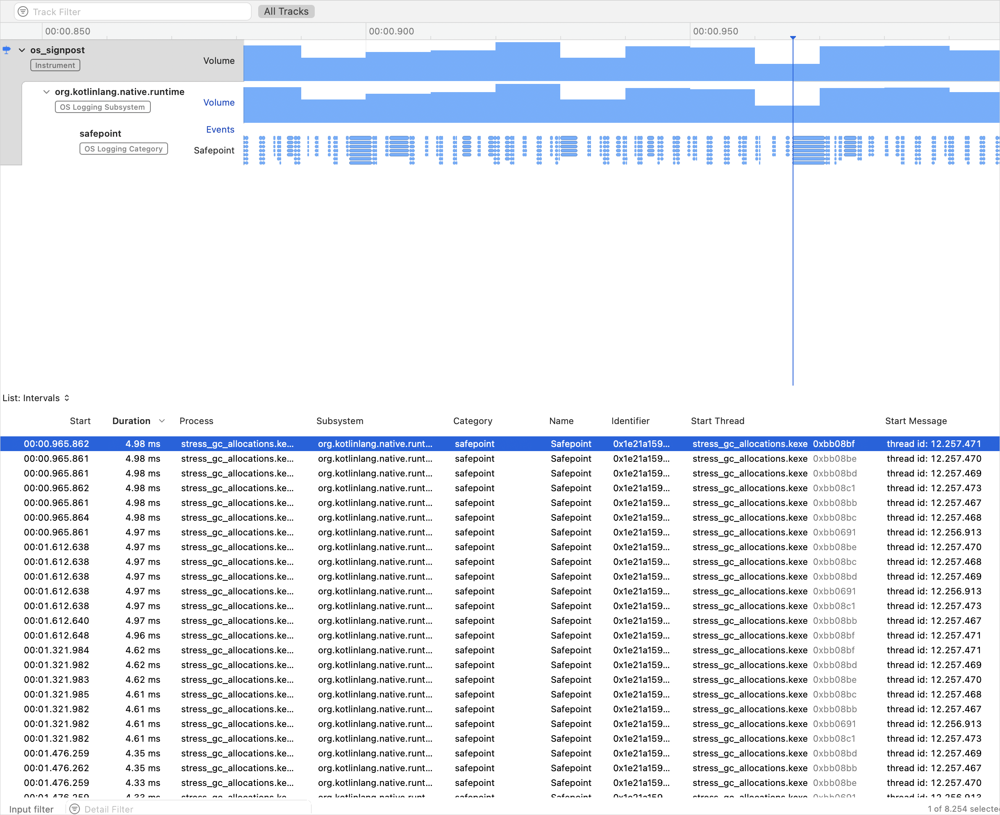

Kotlin/Native uses a modern memory manager that is similar to the JVM, Go, and other mainstream technologies, including the following features:
Objects are stored in a shared heap and can be accessed from any thread.
Tracing garbage collection is performed periodically to collect objects that are not reachable from the "roots", like local and global variables.
Garbage collector
Kotlin/Native's garbage collector (GC) algorithm is constantly evolving. Currently, it functions as a stop-the-world mark and concurrent sweep collector that does not separate the heap into generations.
The GC is executed on a separate thread and started based on the memory pressure heuristics or by a timer. Alternatively, it can be called manually.
The GC processes the mark queue on several threads in parallel, including application threads, the GC thread, and optional marker threads. Application threads and at least one GC thread participate in the marking process. By default, application threads must be paused when the GC is marking objects in the heap.
When the marking phase is completed, the GC processes weak references and nullifies reference points to an unmarked object. By default, weak references are processed concurrently to decrease the GC pause time.
To force-start the garbage collector, call kotlin.native.internal.GC.collect(). This method triggers a new collection and waits for its completion.
Monitor GC performance
To monitor the GC performance, you can look through its logs and diagnose issues. To enable logging, set the following compiler option in your Gradle build script:
-Xruntime-logs=gc=info
Currently, the logs are only printed to stderr.
On Apple platforms, you can take advantage of the Xcode Instruments toolkit to debug iOS app performance. The garbage collector reports pauses with signposts available in Instruments. Signposts enable custom logging within your app, allowing you to check if a GC pause corresponds to an application freeze.
To track GC-related pauses in your app:
To enable the feature, set the following compiler option in your gradle.properties file:
Open Xcode, go to Product | Profile or press Cmd + I. This action compiles your app and launches Instruments.
In the template selection, select os_signpost.
Configure it by specifying org.kotlinlang.native.runtime as subsystem and safepoint as category.
Click the red record button to run your app and start recording signpost events:

Here, each blue blob on the lowest graph represents a separate signpost event, which is a GC pause.
Optimize GC performance
To improve GC performance, you can enable concurrent marking to decrease the GC pause time. This allows the marking phase of garbage collection to run simultaneously with application threads.
The feature is currently Experimental. To enable it, set the following compiler option in your gradle.properties file:
kotlin.native.binary.gc=cms
Disable garbage collection
It's recommended to keep the GC enabled. However, you can disable it in certain cases, such as for testing purposes or if you encounter issues and have a short-lived program. To do so, set the following binary option in your gradle.properties file:
kotlin.native.binary.gc=noop
Memory consumption
Kotlin/Native uses its own memory allocator. It divides system memory into pages, allowing independent sweeping in consecutive order. Each allocation becomes a memory block within a page, and the page keeps track of block sizes. Different page types are optimized for various allocation sizes. The consecutive arrangement of memory blocks ensures efficient iteration through all allocated blocks.
When a thread allocates memory, it searches for a suitable page based on the allocation size. Threads maintain a set of pages for different size categories. Typically, the current page for a given size can accommodate the allocation. If not, the thread requests a different page from the shared allocation space. This page may already be available, require sweeping, or have to be created first.
The Kotlin/Native memory allocator comes with protection against sudden spikes in memory allocations. It prevents situations where the mutator starts to allocate a lot of garbage quickly and the GC thread cannot keep up with it, making the memory usage grow endlessly. In this case, the GC forces a stop-the-world phase until the iteration is completed.
You can monitor memory consumption yourself, check for memory leaks, and adjust memory consumption.
Check for memory leaks
To access the memory manager metrics, call kotlin.native.internal.GC.lastGCInfo(). This method returns statistics for the last run of the garbage collector. The statistics can be useful for:
Debugging memory leaks when using global variables
Checking for leaks when running tests
import kotlin.native.internal.*
import kotlin.test.*
class Resource
val global = mutableListOf<Resource>()
@OptIn(ExperimentalStdlibApi::class)
fun getUsage(): Long {
GC.collect()
return GC.lastGCInfo!!.memoryUsageAfter["heap"]!!.totalObjectsSizeBytes
}
fun run() {
global.add(Resource())
// The test will fail if you remove the next line
global.clear()
}
@Test
fun test() {
val before = getUsage()
// A separate function is used to ensure that all temporary objects are cleared
run()
val after = getUsage()
assertEquals(before, after)
}
Adjust memory consumption
If there are no memory leaks in the program, but you still see unexpectedly high memory consumption, try updating Kotlin to the latest version. We're constantly improving the memory manager, so even a simple compiler update might improve memory consumption.
If you continue to experience high memory consumption after updating, switch to the system memory allocator by using the following compiler option in your Gradle build script:
-Xallocator=std
If this doesn't improve your memory consumption, report an issue in YouTrack.
Unit tests in the background
In unit tests, nothing processes the main thread queue, so don't use Dispatchers.Main unless it was mocked. Mocking it can be done by calling Dispatchers.setMain from kotlinx-coroutines-test.
If you don't rely on kotlinx.coroutines or if Dispatchers.setMain doesn't work for you for some reason, try the following workaround for implementing the test launcher:
package testlauncher
import platform.CoreFoundation.*
import kotlin.native.concurrent.*
import kotlin.native.internal.test.*
import kotlin.system.*
fun mainBackground(args: Array<String>) {
val worker = Worker.start(name = "main-background")
worker.execute(TransferMode.SAFE, { args.freeze() }) {
val result = testLauncherEntryPoint(it)
exitProcess(result)
}
CFRunLoopRun()
error("CFRunLoopRun should never return")
}
Then, compile the test binary with the -e testlauncher.mainBackground compiler option.